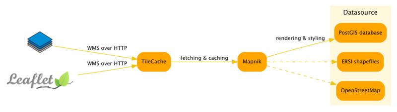

GIS系统组成
和传统的三层架构一样，一个典型的GIS系统也是由三部分组成：客户端，服务器，存储。在实际的场景中，可能又会引入缓存服务器，负载均衡服务器等。

| Name | Description |
|---|---|
| 客户端 | OpenLayers / Leaflet |
| 服务器 | Mapnik::OGCServer |
| 渲染引擎 | Mapnik |
| 存储 | Postgres + PostGIS / OSM Data / Shapefiles |
和传统的三层架构一样，一个典型的GIS系统也是由三部分组成：客户端，服务器，存储。在实际的场景中，可能又会引入缓存服务器，负载均衡服务器等。
| Name | Description |
|---|---|
| 客户端 | OpenLayers / Leaflet |
| 服务器 | Mapnik::OGCServer |
| 渲染引擎 | Mapnik |
| 存储 | Postgres + PostGIS / OSM Data / Shapefiles |
这些信息存储在数据文件中（shapefiles）或者数据库中，通过使用专门的工具来将这些地理信息转换成图片。由于每张图片都是透明的，这样叠加起来的最后效果就是如Google Maps之类应用的结果了。当然，叠加过程一般都发生在服务器端（有些简单应用则是在客户端完成某些层次的绘制，比如我之前发过的我去过的地方，这些热力图就是在客户端通过JavaScript加上去的。）。 地图在服务器端被渲染出来之后，尺寸一般会非常大。需要有工具将这些大图切分成很多组的小图，这些小图被称之为瓦片（tile）。为了给不同缩放级别的客户端提供不同的图片，这些瓦片被精心的分成了多个组，每个组都有编号。如果地图支持18级的缩放，就会现有18个分组。当然分组好越靠后，分组中的瓦片越多。
通常来讲，我们看到的地图是由一个底图和若干个层的叠加来达到的最终结果。其中每个层次都会保存不同类型的地理信息，比如将所有的河流信息放在一个层，将建筑物放在另外一个层。

比如当客户端请求缩放级别为10的地图时，客户端（比如OpenLayers）会根据经纬度计算好图片的边界，然后请求第10级的一些瓦片，并将这些瓦片排列在画布上。一般而言，这些瓦片都是正方形（256x256或者512x512）。 WMS(Web Map Service)是一个基于HTTP的简单协议，客户端发送的请求中包含请求类型，地图的层次，边界等信息，服务器根据这个信息生成图片，并返回该图片：
地理现象和地理要素的表达通常是多尺度的，尺度表示了地物的综合程度和位置精度，衡量尺度的概念一般用分辨率或比例尺。
在GIS中所提到的分辨率，也称地面分辨率（Ground Resolution）或空间分辨率（Spatial Resolution），
表示一个像素（pixel）代表的地面实际距离。
以谷歌地图为例：在缩放级别为 1 时，图片大小为4个 256*256 的图片，
那么赤道上的空间分辨率为：地球赤道周长（实地距离）除以256*2（像素大小）。
其他纬度上的分辨率则为：纬度圈长度/512。
因此可以看出，分辨率取决于两个参数：纬度和缩放级别。
缩放级别决定了像素的多少，纬度决定了地面距离的长短。
因此谷歌地图某视图下的分辨率计算公式为（单位：米/像素）：
F(X,Y)：地图分辨率；
X：纬度值；
Y：缩放级别；
R：常量 6378137，表示地球半径，单位：米。

比例尺通常以比率(如 1:10000 )来表示，表示图上距离与实地距离之比。
例如 1:10000 表示图上 1cm 代表实际距离 10000cm，即100米。
由于比例尺起源较早，通常用（纸质）图上的距离衡量实际距离；
而分辨率则通常用设备屏幕上的距离来衡量实际距离。
而同一个地图视图，尺度是唯一的，比例尺和分辨率只不过是两种表示方法，
因此它们是一一对应的。 比例尺与分辨率之间的换算公式如下：
Scale：地图比例尺；
Resolution：地图分辨率；
PPI：每英寸的像素点数。

其中 PPI，即 Pixel per Inch，即每英寸的像素点数（在不混淆情况下，也有用 DPI 来表示该参数）；
0.0254 为英寸和米的转换常数。1英寸(in)=0.0254米(m)
由于比例尺和分辨率一一对应，因此比例尺也取决于纬度和缩放级别两个参数，并且还与 PPI 相关。
仍旧以谷歌地图为例：
当地图处于全幅状态时，上下移动地图，使得地图中心线处纬度发生变化，因此比例尺随之变化；
同理，当地图处于不同的缩放级别时，地图比例尺同样也会发生变化。
“弧度”和“度”是度量角大小的两种不同的单位。就像“米”和“市尺”是度量长度大小的两种不同的单位一样。
两条射线从圆心向圆周射出，形成一个夹角和夹角正对的一段弧。
当这段弧长正好等于圆周长的360分之一时，两条射线的夹角的大小为1度。
两条射线从圆心向圆周射出，形成一个夹角和夹角正对的一段弧。
当这段弧长正好等于圆的半径时，两条射线的夹角大小为1弧度。

1弧度＝180°/π （≈57.3°）
1度＝π/180 弧度